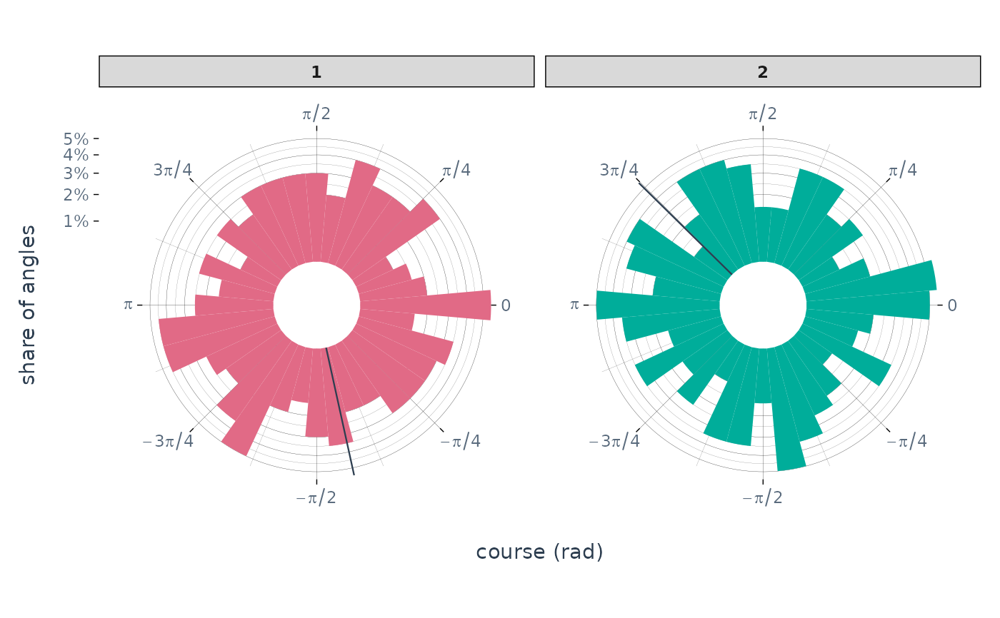
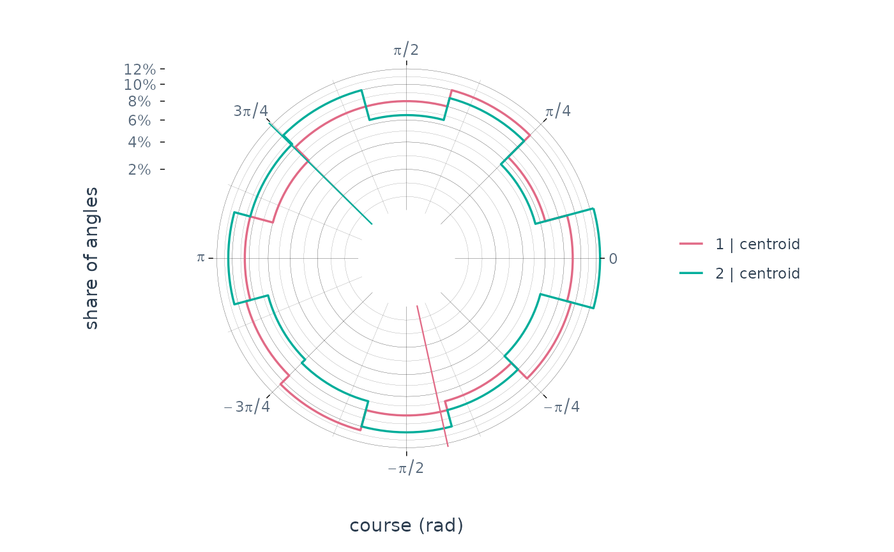
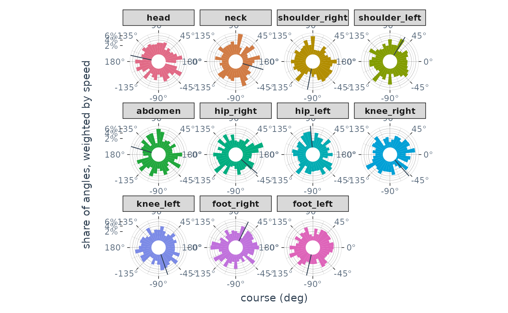
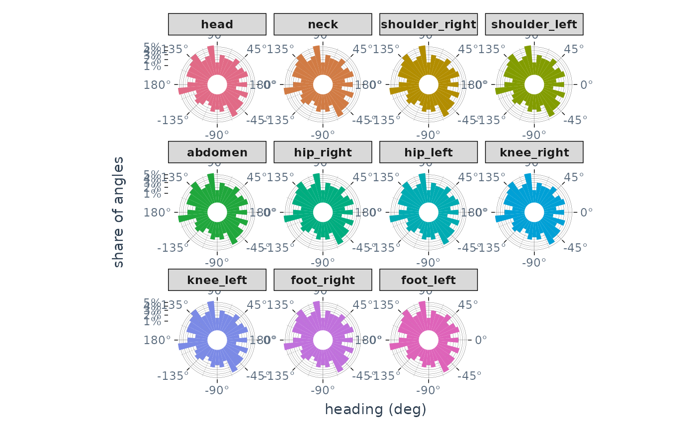

![[Experimental]](figures/lifecycle-experimental.svg)
Draws an angular column of an aniframe as a circular histogram, or rose
diagram: one wedge per bin of directions, its size the share of the group's
angles that fall in the bin. Use it for any angle the frame stores in its
angular unit, such as course from animetric::calculate_kinematics() or a
2D orientation (heading) declared with animetric::add_orientation().
The plot takes its conventions from the frame rather than assuming them:
Unit: the column is read in the frame's
unit_angle(anicore::get_metadata()) and binned in radians (anicore::angle_to_rad()). The angular axis is labelled in degrees or radians to match, andbinwidthis given in the same unit. A frame declaring no angular unit is read as radians.Zero and sense:
0points along+x, drawn to the right, and angles count fromxtowardy. Whether that is counter-clockwise or clockwise on the page comes fromanicore::get_angle_direction(): a frame withypointing up is drawn counter-clockwise, and one withypointing down, such as image coordinates, clockwise. A frame whose axis directions are unknown is drawn counter-clockwise, the sense ofatan2().Range: angles are wrapped onto the circle before binning, so signed angles in
(-pi, pi], angles in[0, 2*pi)and unwrapped angles all give the same plot, and a distribution straddlingpiis not split. The axis is labelled in the range the column uses: signed when it holds negative angles, otherwise from0to a full turn.
The bins are centred on multiples of the bin width, starting at 0, so
with the default 36 bins of 10 degrees the four directions along the axes
each fall in the middle of a bin.
Wedges show the share of each group's angles, or with weight, the share
of its total weight. They start from an empty inner circle, inner_radius
of the way out, which keeps the narrow tips of the wedges from crowding the
centre; set it to 0 for a classic rose. By default a wedge's area, rather
than its length, is proportional to its share, as in circular::rose.diag()
and tectonicr::rose(): a wedge of share n reaches from the inner radius
r0 out to sqrt(r0^2 + k * n), with k set so that the largest reaches
the edge. With equal_area = FALSE its length is proportional to its share
instead, which makes peaks stand out more but exaggerates them. The radial
axis is labelled in shares either way. Missing angles and weights are left
out.
Weighting is useful for directions of travel, such as course: when an
animal is nearly still, its direction of travel is set by tracking jitter,
and those frames can swamp the ones where it is going somewhere. Weighting
by speed counts each frame by how far it moved.
With show_mean = TRUE, a thin line marks each group's circular mean
direction (anicore::circ_mean(), weighted when weight is given), running
from the inner circle to the edge. It shows the direction only, not how
concentrated the angles are around it. When the angles are close to
uniform, the mean resultant length is small and the mean direction is
poorly defined, so read the line together with the wedges.
Groups are the frame's trajectory groups (anicore::get_keys()), coloured
with palette_animovement() as in plot_timeseries(). The layout
argument chooses how they are arranged:
"facet"(default): each group gets its own panel, filled in its colour –facet_grid()when both an identity and a temporal context (such as trial) vary, otherwisefacet_wrap()."inline": all groups share one panel, each drawn as an outline in its colour, with a legend when there is more than one group.
Arguments
- data
An aniframe object.
- ...
Additional arguments (currently unused).
- variable
Name of the angular column to plot, a single string. Required (no auto-detection).
- bins
Number of bins round the full circle, a single whole number. Defaults to
36, bins of 10 degrees, unlessbinwidthis given.- binwidth
Width of each bin, in the frame's angular unit, as an alternative to
bins. It must divide a full turn into a whole number of bins, for example15in a frame in degrees orpi / 6in one in radians.- weight
Name of a numeric column to weight each angle by, such as
"speed", orNULL(default) to count each angle once. Weights must not be negative.- equal_area
Whether a wedge's area (
TRUE, default) or its length (FALSE) is proportional to its share.- inner_radius
Radius of the empty circle in the middle, as a fraction of the plot's radius, from
0(a classic rose) up to but not including1. Default0.25.- show_mean
Whether to draw a line at each group's circular mean direction. Default
TRUE.- layout
Either
"facet"(default, one panel per group) or"inline"(all groups in one panel, as outlines).- mode
Either
"light"(default) or"dark"; passed totheme_animovement().- palette
Name of a qualitative palette accepted by
grDevices::hcl.colors(); controls the hue family across groups.
See also
plot_timeseries() for the same column against time.
Examples
af <- anicore::example_anipoint(n_obs = 200, n_individuals = 2, n_keypoints = 1)
af$course <- atan2(c(0, diff(af$y)), c(0, diff(af$x)))
plot_circular(af, variable = "course")

# Fewer, wider bins, with the groups overlaid
plot_circular(af, variable = "course", binwidth = pi / 6, layout = "inline")

# Course from animetric, and a heading declared from two keypoints, in a
# frame storing angles in degrees
kin <- anicore::example_anipoint(n_obs = 200, n_individuals = 1) |>
anicore::convert_unit_angle("deg") |>
animetric::add_orientation(
from = "shoulder_right",
to = "head",
level = "keypoint"
) |>
animetric::calculate_kinematics()
# Each frame counted by how far it moved
plot_circular(kin, variable = "course", weight = "speed")

plot_circular(kin, variable = "heading", show_mean = FALSE)
